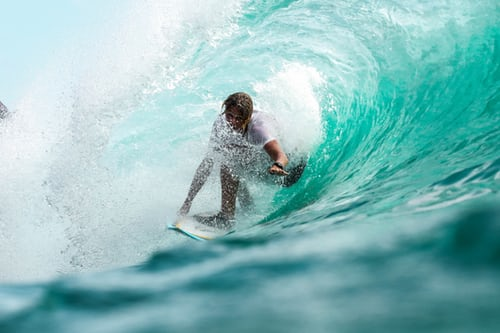
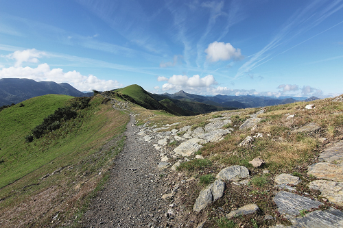
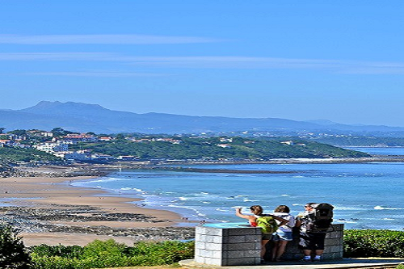
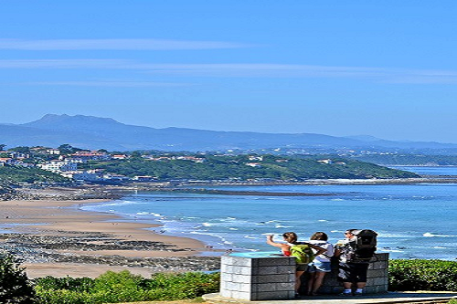

Découvrez l'arrière Pays
Les richesses du Pays basque
Le Pays de Saint-Jean-Pied-de-Port, aussi appelé Pays de Cize, est la région de Basse Navarre qui s'articule autour du village de Saint-Jean-Pied-Port, classé parmi les Plus Beaux Villages de France
Bordée par la frontière espagnole d'un côté et par la vallée de Saint Etienne de Baïgorry de l'autre, cette région est traversée par le chemin de Saint Jacques de Compostelle et le GR 10.
C'est également le pays de l'AOP Irouléguy, dont on peut admirer les vignes en terrasse à flanc de montagne.
La région est traversée par la Nive et la proximité avec les montagnes offre de très beaux sites de canyoning et spéléologie. Les randonnées sont nombreuses. A partir des villages de Jaxu et Ispoure, vous pourrez partir en balade dans les vignes d'Irouléguy et sur le pic de l'Arradoy. Le sentier du GR 10 offre la possibilité de rejoindre à la fois Estérençuby et Saint Etienne de Baïgorry, au départ de Saint-Jean-Pied-de-Port. En partant du col d'Arnostéguy, vous pourrez partir à la découverte des vestiges de la tour romaine d'Urkulu, à plus de 1400 m d'altitude. A la frontière espagnole, à proximté du col d'Orgambidé, la grotte d'Harpéa est reconnaissable par sa forme si particulière.
Une visite au sommet de la Rhune
La gastronomie du Pays Basque tient sa réputation des produits du terroir, issus bien souvent de petites exploitations familiales, terres d’élevage, respectant traditions et savoir-faire. Fromages, piments, vins, jambons, gâteaux… mais aussi ressources de l’océan, inspirent la variété de la cuisine basque, une cuisine de caractère. Il existe au Pays basque depuis le milieu du XIXème siècle des sociétés gastronomiques, sorte de clubs détenus par des hommes qui se mettent en cuisine, et perpétuent, autour des fourneaux, les recettes ancestrales. Ces sociétés jouent un rôle important dans la transmission du patrimoine culturel et culinaire basque.
La Rhune (ou Larrun en basque) est un sommet situé dans la chaîne des Pyrénées, au Pays basque, dans le département français des Pyrénées-Atlantiques. Son altitude est de 900 m.
Le massif de la Rhune est traversé par la ligne de frontière franco-espagnole, qui est aussi la frontière entre les provinces basques du Labourd et de la Basse-Navarre.
5 villages typiques de l'arrière-pays basque à découvrir
À seulement quelques kilomètres de l'océan, le Pays basque intérieur regorge de villages au charme époustouflant. Nul besoin de parcourir des kilomètres pour se sentir complètement dépaysé et prendre un bon bol d'air.
On vous a fait rêver ? Allez, c’est parti !
- Bidarray , au pied de l'Iparla
- La Bastide-Clairence , l'un des plus beaux villages de France
- Saint-Étienne-de-Baïgorry , pour son histoire très riche
- Ahetze , aux portes de l'océan
- Ainhoa , une halte salutaire


 

Le Pays de Saint-Jean-Pied-de-Port, aussi appelé Pays de Cize, est la région de Basse Navarre qui s'articule autour du village de Saint-Jean-Pied-Port, classé parmi les Plus Beaux Villages de France
Bordée par la frontière espagnole d'un côté et par la vallée de Saint Etienne de Baïgorry de l'autre, cette région est traversée par le chemin de Saint Jacques de Compostelle et le GR 10.
C'est également le pays de l'AOP Irouléguy, dont on peut admirer les vignes en terrasse à flanc de montagne.
La région est traversée par la Nive et la proximité avec les montagnes offre de très beaux sites de canyoning et spéléologie. Les randonnées sont nombreuses. A partir des villages de Jaxu et Ispoure, vous pourrez partir en balade dans les vignes d'Irouléguy et sur le pic de l'Arradoy. Le sentier du GR 10 offre la possibilité de rejoindre à la fois Estérençuby et Saint Etienne de Baïgorry, au départ de Saint-Jean-Pied-de-Port. En partant du col d'Arnostéguy, vous pourrez partir à la découverte des vestiges de la tour romaine d'Urkulu, à plus de 1400 m d'altitude. A la frontière espagnole, à proximté du col d'Orgambidé, la grotte d'Harpéa est reconnaissable par sa forme si particulière.
La gastronomie du Pays Basque tient sa réputation des produits du terroir, issus bien souvent de petites exploitations familiales, terres d’élevage, respectant traditions et savoir-faire. Fromages, piments, vins, jambons, gâteaux… mais aussi ressources de l’océan, inspirent la variété de la cuisine basque, une cuisine de caractère. Il existe au Pays basque depuis le milieu du XIXème siècle des sociétés gastronomiques, sorte de clubs détenus par des hommes qui se mettent en cuisine, et perpétuent, autour des fourneaux, les recettes ancestrales. Ces sociétés jouent un rôle important dans la transmission du patrimoine culturel et culinaire basque.
La Rhune (ou Larrun en basque) est un sommet situé dans la chaîne des Pyrénées, au Pays basque, dans le département français des Pyrénées-Atlantiques. Son altitude est de 900 m. Le massif de la Rhune est traversé par la ligne de frontière franco-espagnole, qui est aussi la frontière entre les provinces basques du Labourd et de la Basse-Navarre.
À seulement quelques kilomètres de l'océan, le Pays basque intérieur regorge de villages au charme époustouflant. Nul besoin de parcourir des kilomètres pour se sentir complètement dépaysé et prendre un bon bol d'air.
On vous a fait rêver ? Allez, c’est parti !
- Bidarray , au pied de l'Iparla
- La Bastide-Clairence , l'un des plus beaux villages de France
- Saint-Étienne-de-Baïgorry , pour son histoire très riche
- Ahetze , aux portes de l'océan
- Ainhoa , une halte salutaire